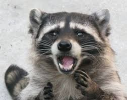

광견병에 걸린 너구리, 도시에서 발견돼 시민 경계 강화
 서울 외곽에서 광견병
증상을 보이는 너구리가 발견되어 방역 당국이 즉시 포획에 나섰다. 이
너구리는 낮에도 활동하며 비정상적으로 공격적인 행동을 보였고, 주택가에
접근해 주민들의 불안을 야기했다. 광견병은 사람과 동물 모두에게 치명적일 수
있는 바이러스로, 물리거나 긁힐 경우 즉각 치료가 필요하다. 보건 당국은
반려동물의 예방접종 여부를 확인하고, 야생동물 접촉을 피할 것을 당부했다.
시민 신고를 기반으로 추가 조사가 진행 중이다.